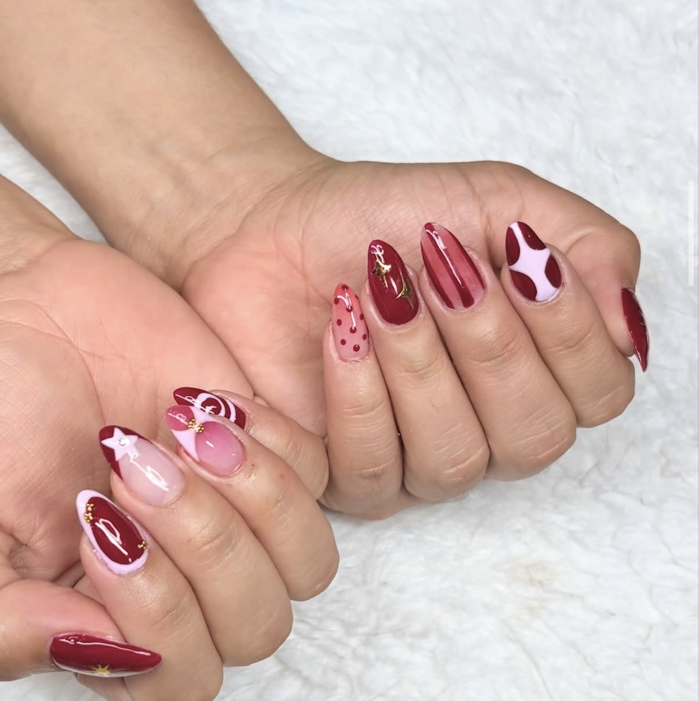
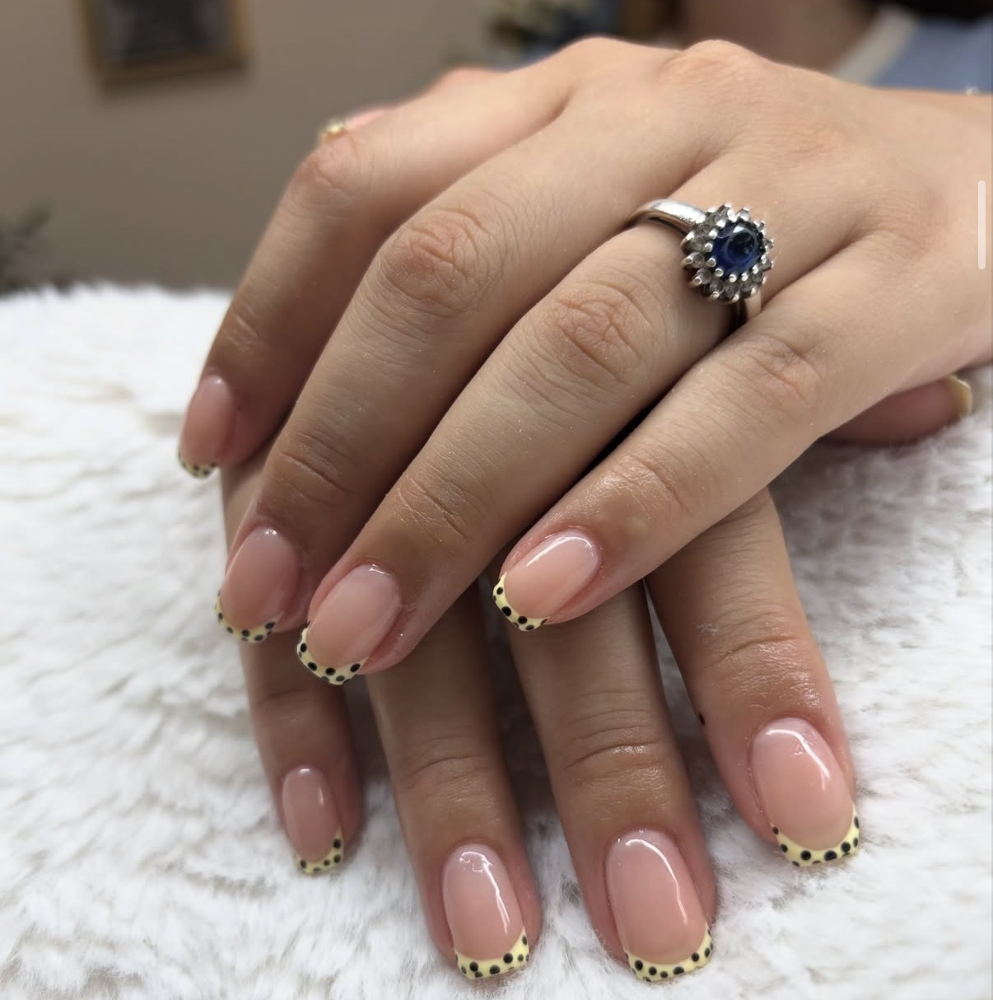
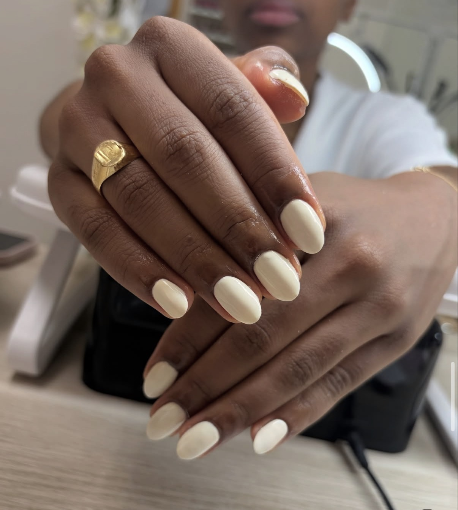
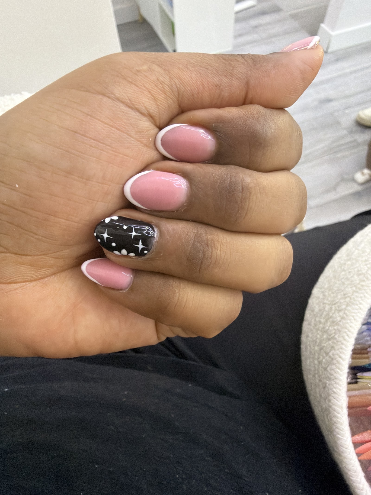
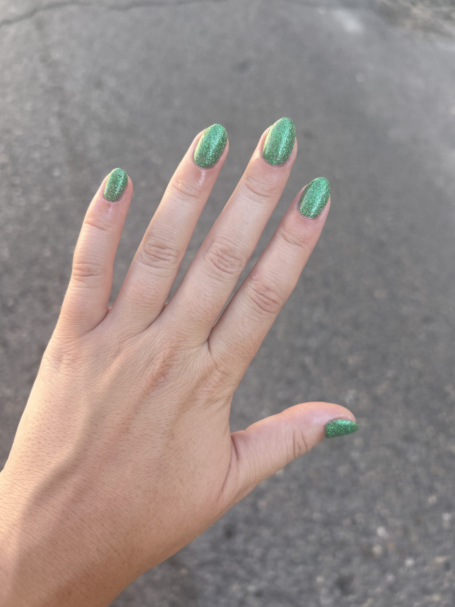
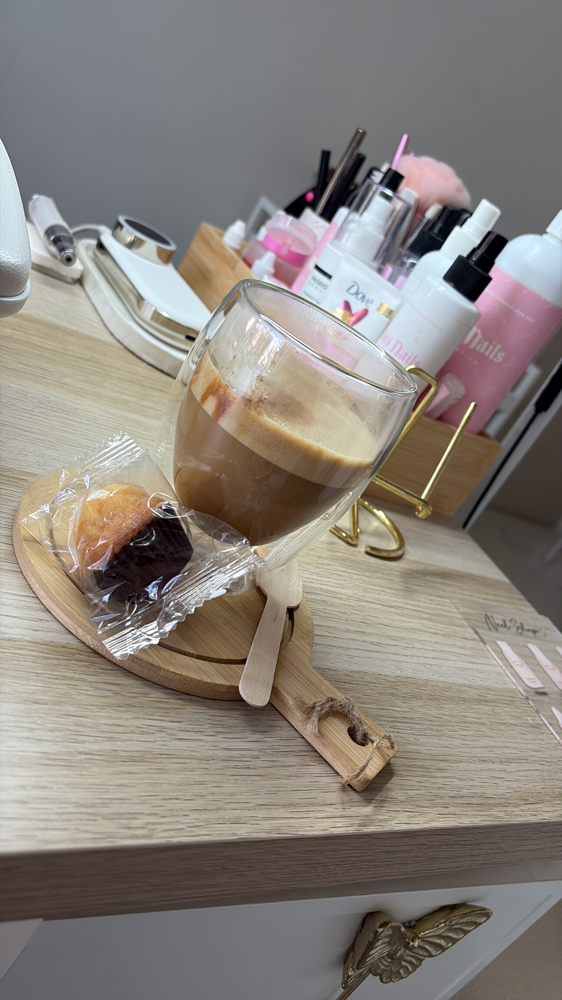
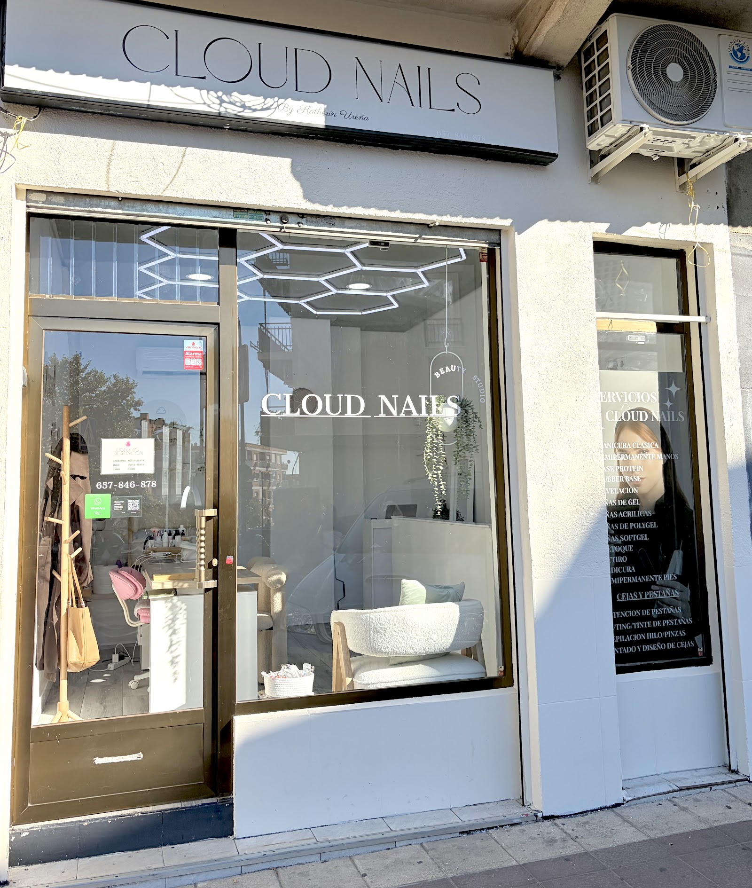

Manicura, pedicura y diseños de uñas en la calle Asturias. Katherine trabaja con un nivel de perfección altísimo y te recibe con café, agua o fruta.
★★★★★5,0 · 15 reseñas en Google
Cada diseño hecho con calma y al detalle, en un salón luminoso y tranquilo. Te invitamos a un café mientras te dejamos las manos y los pies de 10.
Con diseño o natural.
Pies de 10.
Perfección altísima.
Reseñas de 5 estrellas.
Todo organizado por grupos, para que encuentres lo que buscas en segundos.
Algunos trabajos reales y nuestro salón en la calle Asturias, 12.






5,0 de 5 estrellas · 15 reseñas
"¡Trato maravilloso! Un nivel de perfección altísimo. Te ofrece café, agua, fruta. Servicio de 10."
Mónica G."Un trabajo impecable y un trato excelente, salí encantada. Sin duda la mejor que me ha hecho las uñas."
Cinthia U."Encantada me dejó Katherine, mis manos y mis pies de 10. Muchas gracias, seré tu clienta fiel."
Natalia C.Reserva en Booksy o escríbenos por WhatsApp.
C/ de Asturias, 12
28701 San Sebastián de los Reyes, Madrid